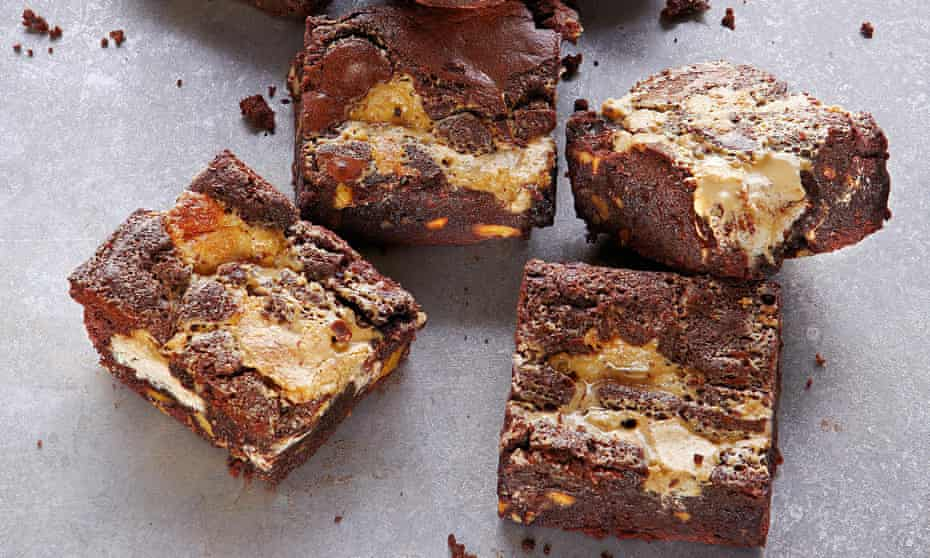

Tahini and halva brownies

The cooking time is crucial if you’re to get the desired balance between cakey and gooey, but it can vary depending on both your oven and where you put your brownie tray. The difference between a cooking time of 18 and 22 minutes can be significant, so do stay alert. These keep for up to five days in an airtight container.
Heat the oven to 180C/350F/gas mark 4. Quarter-fill a small saucepan with water and place on a high heat. Bring to a boil, then reduce the heat to medium and sit a heatproof bowl on top of the pan, making sure its base does not come into contact with the water. Put the butter and chocolate in the bowl, leave for about two minutes, to melt, then remove the bowl from the heat and stir until you have a thick, shiny sauce. Set aside to come down to room temperature.
In a large bowl, whisk the eggs and sugar until pale and creamy, and the whisk leaves a trail behind it – about three minutes with an electric whisk, longer by hand. Gently fold the chocolate mix into the eggs – don’t overwork the mix – then fold in the flour, cocoa, walnuts and three-quarters of a teaspoon of salt. Pour into a 21cm x 31cm baking tray lined with parchment paper and spread out into an even layer.
Use a spoon to insert tahini into the brownie mix in about 12 places, then use the back of a clean spoon to swirl it a little through the mix – not too much: you want it uneven. Dot the halva on the surface, pushing it down a little so that it is well submerged but still visible.
Bake for about 20 minutes, until the top is crisp and the middle still has a slight wobble and is gooey inside: check after 18 minutes (see introduction). The brownies may seem a bit undercooked at first, but they will firm up as they cool down. Cut the baked brownie into 20 pieces and serve warm-ish (and gooey!) or at room temperature (and not quite so gooey).